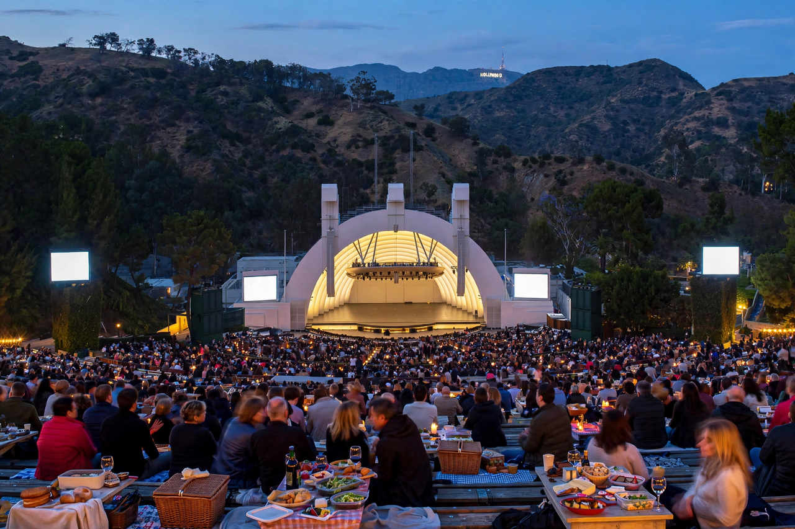

| Hollywood Bowl | |
|---|---|
| Address | 2301 N Highland Avenue, Hollywood, Los Angeles, California |
| Opened | 11 July 1922 |
| Capacity | 17,500 |
| Owner | County of Los Angeles |
| Operator | Los Angeles Philharmonic Association |
| Resident ensembles | Los Angeles Philharmonic, Hollywood Bowl Orchestra |
The Hollywood Bowl is an amphitheatre in the Hollywood Hills neighbourhood of Los Angeles, California. It was named one of the 10 best live music venues in the United States by Rolling Stone magazine in 2018. The Bowl is known for its distinctive bandshell, originally a set of concentric arches that graced the site from 1929 through 2003, when it was replaced by a larger one to accommodate its increased capacity. The site is a public park and picnic ground with the amphitheatre set into a natural hillside.
The site, a natural amphitheatre known as Daisy Dell in Bolton Canyon, was dedicated in 1922 with concerts by the Los Angeles Philharmonic. Early temporary shells included a pyramid designed by Lloyd Wright. In 1929 a permanent shell of concentric arches — designed by the Allied Architects Association — became an icon. By the 1970s the venue had become a premier rock venue as well; the Beatles' 1964 and 1965 concerts there were recorded, and acts from Judy Garland to The Doors performed. Fireworks-accompanied July 4th concerts and picnic baskets became Bowl traditions.
In 2004 a new, larger shell designed by Hodgetts + Fung opened, retaining the beloved concentric-arch silhouette while improving acoustics and stage capacity. The summer season features the LA Phil under its music director, the Hollywood Bowl Orchestra, jazz, world music, film-with-live-orchestra nights, and the annual Playboy Jazz Festival (now the Hollywood Bowl Jazz Festival).